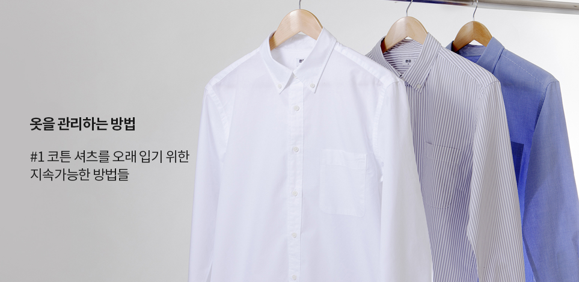
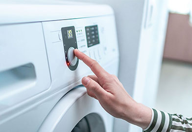
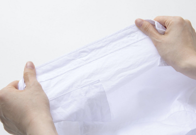
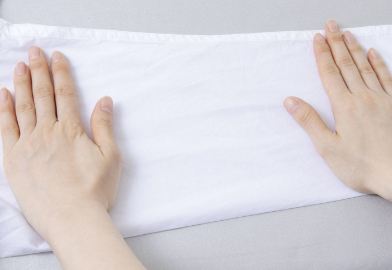

마음에 드는 옷이라면 더 오래 입으세요.
코튼 셔츠를 더 오랫동안 입을 수 있는
몇가지 아이디어를 소개합니다.
세탁하면서 셔츠가 많이 구겨져서
입고 싶지 않아요
코튼 셔츠를 세탁하고 나니 구김이 져서
입고 싶지 않은 적이 있으신가요?
세탁 시, 구김을 예방하기 위한
몇 가지 팁을 알려드릴게요.
-

탈수 시간 줄이기
세탁기의 일반적인 탈수 시간을 셔츠에 적용하면, 이 과정에서 많은 구김이 생길 수 있습니다. 탈수 시간은 약 1분 정도로 설정하세요.
-

봉제 부분을 펴서 건조하기
셔츠의 소매나 단추 등의 봉제 부분은 세탁 과정에서 줄어들기 쉽습니다. 탈수 후 셔츠가 아직 젖어 있는 상태에서 봉제 부분을 솔기 방향에 따라 손으로 당겨서 늘려 주세요.
소중히 관리해서 입는 옷이기에,
유니클로는 소재 선정에도 매우 신경쓰고 있습니다.
셔츠를 다리기가
힘들어요
반듯하게 펴진 코튼 셔츠를 입고 싶지만 시간이 많이 걸리는 다림질이 귀찮다고 느껴본
적은 없으신가요?
요령을 잘 익히면 다림질 시간을 줄이면서 전기도 아낄 수 있습니다.
-

다림질 시간을 줄일 수 있는 셔츠 털기
셔츠를 말리기 전, 셔츠를 위에서 아래로 힘줘서 털어주세요. 큰 주름이 제거되어 다림질 시간을 줄일 수 있습니다.
-

스팀 기능을 사용해 다림질하기
다림질을 할 때, 섬유가 부드러워지도록 스팀을 내보내면서 앞으로 밀고, 뒤로 갈 땐 스팀을 멈추고 단단히 눌러주세요. 효율적으로 구김 없이 셔츠를 다릴 수 있습니다.
다림질 시간을 1분 줄이면 *20Wh의 전기를 절약할 수 있습니다.
코튼 셔츠를 입을 때에도, 환경에 미치는 영향을 줄일 수 있도록
유니클로는 생산 과정에서부터 환경을 생각합니다.
*소비전력 1200W 다리미 사용 기준
*제품, 사용 환경, 사용 조건에 따라
소비 전력은 상이합니다.
마음에 드는 옷은 더 오래 두고 입고,
더 이상 입지 않는 옷은 재활용하는 것.
이것이 바로 지속가능성을 실천하는
이상적인 방법이라고 생각합니다.
유니클로가 정성스럽게 만든
코튼 셔츠를 오랫동안 즐겨 입어보세요.
소중한 자원을 더 효율적으로 사용하고
불필요한 낭비는 줄일 수 있습니다.